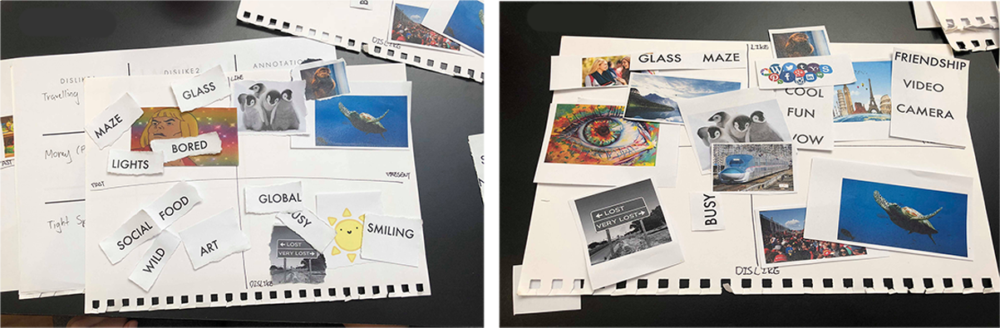
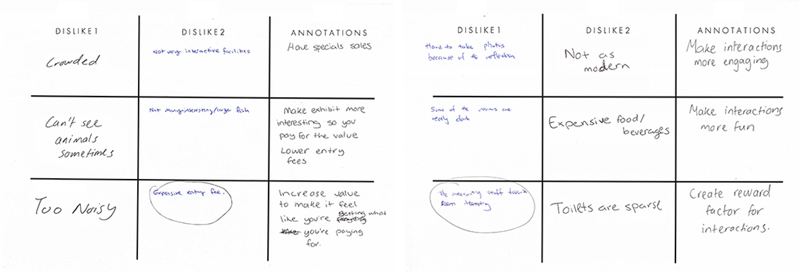
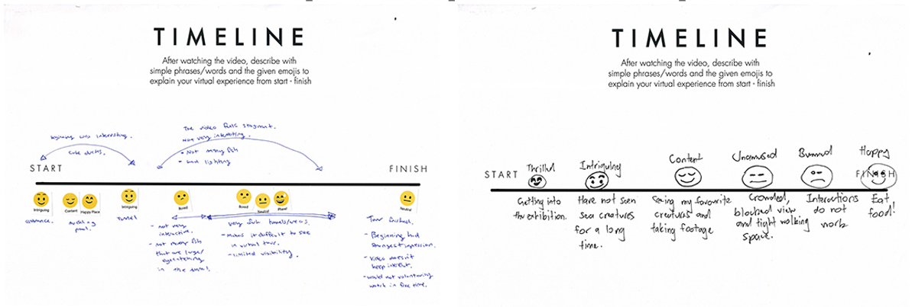

The task assigned was to design a potential digital, tangible and spatial interaction to improve visitor experience of an institution. An Immersion Underwater is a mixed reality experience designed to increase educational engagement through gamification for SEALIFE Sydney Aquarium.
Annie Han, Soomin Lee, Jessica Fernandez
Research, Concept Development, User Journey Design
Photoshop
Multiple methods of user research, testing and concept refinement was implemented to reach the final design.
Generative sessions were conducted with a small group of participants to gather rich data on their tacit and latent needs of aquariums through various activities.
To prepare them for the generative session, sensitising booklets were distributed beforehand with the aim of encouraging the participants to express themselves without constraint and uncover deeper responses and generative discussions.
Axes Framework Collage: Participants choose words and pictures that represent their likes and dislikes of aquariums through the past and present.
Generative Passing: Participants take their problems regarding aquariums and pass them along to others to suggest various ways to counter those problems.
Generative Passing: Participants take their problems regarding aquariums and pass them along to others to suggest various ways to counter those problems.
Design credits: Soomin Lee